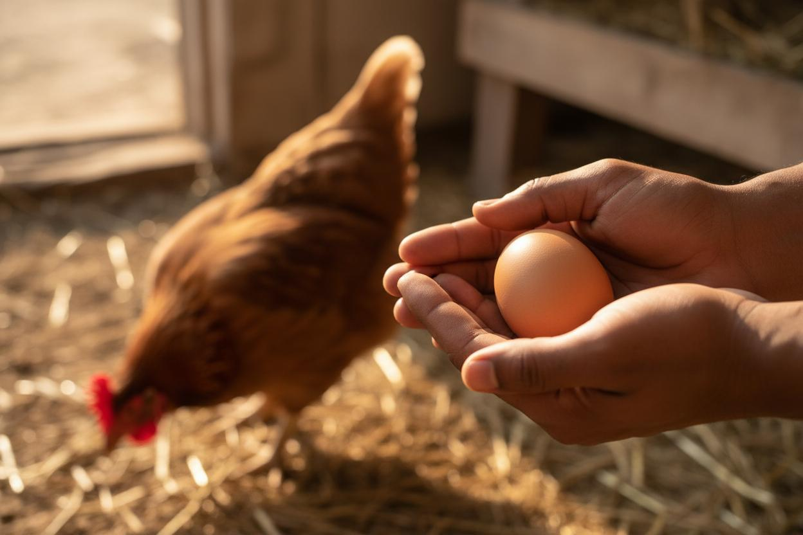

A Simple Poultry Record-Keeping System for Small Farms
A sale does not automatically mean a profit. To understand a flock, a farmer needs to know what came in, what went out, what changed in the flock and which numbers are estimates rather than confirmed records.
Unified Farm BLM raises local chickens and uses this page to explain a practical record structure. The sample numbers below are illustrations only; they are not a report of our farm's current flock size, production or financial results.

Why Memory Is Not Enough
Feed may be bought in bags, eggs sold in trays or individually, and other costs paid at different times. Credit sales may look like income even when the buyer has not paid. A bird may be sold, transferred, lost or found dead. Without dates and quantities, these events are easy to mix together.
A written record does not need to be complicated. Its purpose is to preserve facts so the farmer can compare periods, spot missing information and ask better questions.
The Only 5 Numbers You Must Write Down Daily
| Record | Example | What It Tells You |
|---|---|---|
| Eggs collected | Example: 18 eggs | Production for that date |
| Eggs sold & price | Example: 12 eggs at a stated price | Quantity sold and expected cash |
| Feed used / bought | Example: kilograms used and bag invoice | Consumption and purchase cost |
| Flock changes | Example: bird sold, missing, sick or dead | Explains the current bird count |
| Any expense | Example: transport or veterinary visit | Costs that are easy to overlook |
At the end of the month, total paid income separately from unpaid credit, then total expenses supported by receipts or notes. Do not diagnose a disease from a production trend alone. A change in eggs, feed intake or mortality is a signal to inspect the records and, where appropriate, seek qualified veterinary advice.
The Weekly Numbers That Matter
- Production rate = eggs collected ÷ hens currently laying × 100. Interpret it only after checking age, season, brooding, health and missing entries.
- Feed cost per saleable tray = feed cost for the period ÷ saleable trays produced in that period. This is only one cost; it excludes housing, labour, transport, losses and other expenses unless those are added.
- Mortality rate = deaths during the period ÷ birds present at the start of the period × 100. Record signs and dates, but ask a qualified professional to determine cause.
- Credit outstanding = invoiced sales not yet paid. Keep it separate from cash received so debt is not mistaken for available money.
Set Up the Book Before the First Entry
Begin with an opening record. Write the date, count the birds by group and describe each group in a way you can recognise later. For local chickens this may include adult hens, cocks, growers and chicks. Do not combine birds of different ages into one number if that will make feeding, mortality or production difficult to interpret.
Number the pages and use the same units throughout. If feed is recorded in kilograms, avoid switching between scoops, tins and bags without writing the conversion. If eggs are sold by tray and individually, record both the number of eggs and the selling unit.
Keep Four Records Separate
- Flock register: opening birds, purchases, hatches, sales, deaths and transfers.
- Production register: eggs collected, eggs rejected, eggs retained for hatching and chicks hatched.
- Cash and credit book: money received, expenses paid, customer debts and supplier debts.
- Health and management log: signs observed, professional visits, products used, batch numbers and follow-up dates.
Separating these records prevents one event from disappearing. For example, a customer may collect eggs today but pay next week. The production book records the eggs, the sales book records the transaction, and the cash book records payment only when it is received.
A Worked Weekly Summary
The example below demonstrates the method. It is not Unified Farm BLM production data and should not be copied as a performance target.
| Weekly item | Illustrative entry | Review question |
|---|---|---|
| Opening bird count | 20 local chickens | Can every addition or reduction be explained? |
| Eggs collected | 42 | Were any days missed or hens brooding? |
| Eggs sold | 30 | Where are the remaining eggs recorded? |
| Cash received | UGX 12,000 | Does this match paid sales only? |
| Feed and other costs | UGX 8,500 | Are transport and small purchases included? |
| Closing bird count | 20 | Does it match the flock register? |
Record Health Events Without Guessing
Write what was observed rather than inventing a diagnosis. “Bird inactive, watery droppings, stopped eating, 3 October” is more useful than writing a disease name that has not been confirmed. Record which group was affected, how many birds showed signs and who provided advice.
For any vaccine, medicine, disinfectant or supplement, record the product name, batch or lot number when available, expiry date, amount used, route, date and person responsible. Follow the product label and qualified veterinary guidance. Records help a professional understand the sequence; they do not replace diagnosis.
Separate Household and Farm Money
If money from an egg sale is immediately used for household shopping, record both events. First record the farm sale, then record the withdrawal from farm cash. Otherwise the business may appear to have lost money even when the cash was used outside the farm.
A separate envelope, mobile-money line or cash box can help, but the written record remains essential. Reconcile the expected cash with the cash actually present. Investigate differences while the events are still recent.
Notebook or Phone?
A ruled notebook can work if it is protected from water, animals and unauthorised changes. A phone or spreadsheet can make totals easier, but only if entries are backed up and the farmer can still access them when the device is unavailable.
Choose one system, use it consistently and keep a second copy of monthly summaries. Avoid placing customer phone numbers or private financial information in publicly shared screenshots.
Using Records for a Finance Application
A lender or savings group may ask for sales, expenses, debts and evidence that the farm can repay. Records can support that conversation, but they do not guarantee approval and a notebook is not automatically accepted as collateral. Ask the institution exactly which documents and period it requires.
Start with the facts you can verify today. Consistent records become more useful over time because they allow comparisons across weeks, seasons and flock stages.
Monthly Closing Checklist
- Recount the flock and reconcile every change with the flock register.
- Total production, rejected eggs, sales, cash received and credit outstanding.
- Total feed, transport, veterinary, equipment, labour and other farm expenses.
- Attach receipts or note why a receipt is unavailable.
- Write three observations: what improved, what worsened and what needs investigation.
- Copy the summary to a second safe location.
Sources and limitations
This is a small-farm record framework, not accounting, tax, lending or veterinary advice. Adapt it to the information your farm can verify and obtain professional help where required.
- FAO Gateway to poultry production and products
- Unified Farm BLM egg planning calculator — for estimates that should be checked against actual records